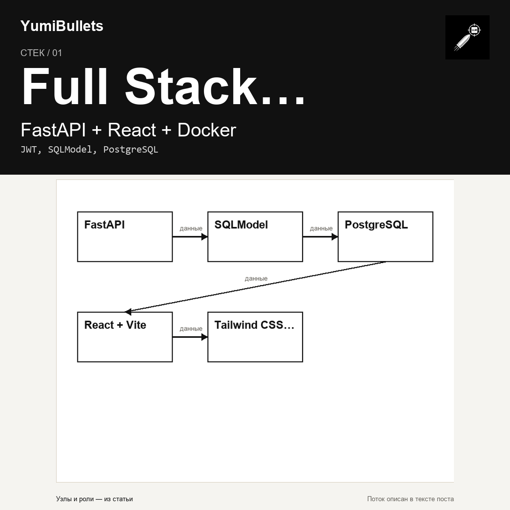

Full-stack шаблон FastAPI: готовый стек с авторизацией, БД и CI/CD
Вы собираете веб-приложение с нуля и понимаете, что авторизацию, базу данных, деплой и тесты придётся писать каждый раз заново. Шаблон full-stack проекта от команды FastAPI — это…